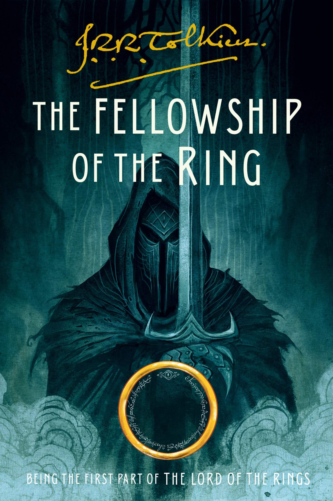

Available Books
A Court of Silver Flames
To Kill a Mockingbird
The Hitch Hiker's Guide To The Galaxy

Normal People

Where The Crawdads Sing
Insurgent Love
Twigted Love

Chainsaw Man
Uglies

Trust

Heart Stopper

The Fellowship Of The Rings